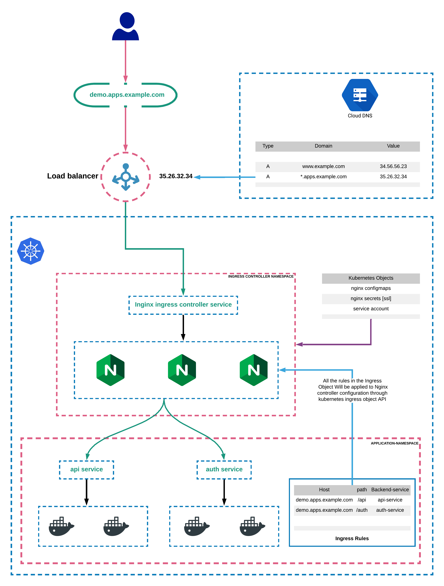

Kubernetes
Table of Contents
1 Kubernetes
Kubernetes 是用于部署容器化应用的系统。Kubernetes 不构建，而是直接获取（比如从 Docker Hub）镜像。
Kubernetes 包含两种机器（实体或虚拟）：
| Master | 运行管理程序，根据配置文件定义的目标状态，管理（启动、重启等）在其他机器上运行的容器。 |
|---|---|
| Node | 运行容器。 |

2 Config
apiVersion: <string> # v1 kind: <string> # E.g. Deployment metadata: <ObjectMeta> spec: <ObjectSpec> # 不同 kind 有不同 spec 对象类型，e.g. DeploymentSpec
2.1 ObjectMeta
metadata: name: <string> labels: <object> annotations: <object> # 用于外部工具的元数据，如 Ingress ...
2.2 LabelSelector
selector: matchLabels: <object> # 键值对，用于匹配 metadata 中的 labels
2.3 Secret
用于存储敏感信息，如密码，但密码通常使用 kubectl create secret 命令创建，而不是使用配置文件。
3 Container
3.1 Container
name: <string> image: <string> env: - name: <string> # 环境变量名 value: <string> # 环境变量值 # 数字需要转换为字符串，e.g. '1234' valueFrom: # 从其他来源获取值，如 Secret secretKeyRef: name: <string> # Secret 对象名 key: <string> # Secret 中的 key ports: - containerPort: <integer> # 暴露的 Pod 端口 hostPort: <integer> # 暴露的主机端口 volumeMounts: - name: <string> # 匹配 Volume 的 name mountPath: <string> # 容器内 mount 路径 subPath: <string> # Volume 内存放此容器 volume 的路径，默认为空，即 Volume 根目录
3.2 Pod
Pod 用于运行一个或一组相关的容器。
containers: - <Container> volumes: - <Volume>
3.3 Deployment
Deployment 用于描述一组 Pod 的理想状态（desired state），Deployment 控制器负责监控并改变当前状态以达到理想状态。
Deployment 可以定义一个 Pod 模版，根据此模版生成一组相同的 Pod。
replicas: <integer> # 理想状态 Pod 数量 selector: <LabelSelector> # 只影响符合此 selector 的 Pod template: metadata: <ObjectMeta> spec: <PodSpec> # 格式同 Pod 配置，如 containers
4 Service
Service 用于配置 Kubernetes 集群的网络环境。
apiVersion: ... kind: Service metadata: ... spec: type: <string> # ClusterIP（默认） # NodePort # ExternalName # LoadBalancer
4.1 ClusterIP
ClusterIP 用于向集群中的其他对象暴露（expose）指定 Pod 的端口。
... spec: type: ClusterIP selector: <object> # 匹配 label 的键值对 ports: - port: <integer> # 暴露给集群内其他 Pod 的端口 targetPort: <integer> # Pod 目标端口
# Foo Deployment kind: Deployment metadata: name: foo-deployment spec: template: metadata: labels: component: foo # Foo CluterIP kind: Service metadata: name: foo-cluster-ip-service spec: type: ClusterIP selector: component: foo # Bar Deployment kind: Deployment metadata: name: bar-deployment spec: template: spec: containers: - name: bar env: - name: FOO_HOST value: foo-cluster-ip-service # 匹配 ClusterIP 的 name
4.2 LoadBalancer
作为集群入口，现在更常用 Ingress 。 LoadBalancer 需要依赖云服务本身的负载均衡，如 AWS 的 ALB。
4.3 NodePort
NodePort 用于向外部网络暴露（expose）指定 Pod 的端口，一般只用于开发环境。
... spec: type: NodePort selector: <object> # 用于匹配 label 的键值对 ports: - port: <integer> # 暴露给集群内其他 Pod 的端口 nodePort: <integer> # 暴露给外部网络的端口 targetPort: <integer> # Pod 目标端口
5 Storage
5.1 Volume
Volume 使容器能在 Pod 级别存储数据，以解决两个问题：
- 当 Pod 中的一个容器重启，它的文件系统将被清空，倒置存储的数据丢失。
- Pod 中的容器之间需要共享文件。
Volume 的生命周期与 Pod 一致，Pod 关闭后，Volume 也被清空。
name: <string> persistentVolumeClaim: claimName: <string> # 匹配 PersistentVolumeClaim 的 name
5.2 Persistent Volume
Persistent Volume | Kubernetes Documentation
Persistent Volume 独立于 Pod，因此比 Pod 的 Volume 更持久化，在 Pod 关闭之后也不会丢失。

5.3 Persistent Volume Claim
Persistent Volume Claim (PVC) 是 Pod 对于它所需要的 Persistent Volume 的声明。
accessModes: - <string> # ReadWriteOnce，单个节点读写 # ReadOnlyMany，多个节点只 # ReadWriteMany，多个节点读写 resources: requests: storage: <string> # E.g. 2Gi storageClassName: <string>
6 Ingress
6.1 ingress-nginx
ingress-nginx （或 Nginx Ingress Controller）用于在 Kubernetes 集群中实现一个基于 Nginx 的负载均衡器，以连接云服务（或 minikube）提供的负载均衡器和集群的业务节点。


6.2 Ingress
apiVersion: ... # extensions/v1beta1 kind: Ingress metadata: ... annotations: kubernetes.io/ingress.class: nginx # 创建基于 Nginx 的 Ingress controller nginx.ingress.kubernetes.io/rewrite-target: /$1 # 转发请求时移除 URL 中的路径，e.g. /api/ -> / spec: rules: - http: paths: - path: /?(.*) backend: serviceName: <string> # 匹配 ClusterIP Service 的 name servicePort: <integer> - path: /foo/?(.*)
7 RBAC
Kubernetes Reference | Using RBAC Authorization
Kubernetes RBAC (Role-Based Access Control) limits access and modification of cluster objects. RBAC is not enabled by default in local dev environments such as Minikube, but should be enabled in prod environments such as Google Cloud.
RBAC consists of accounts and roles.
7.1 Account
Account is for identification. Accounts include:
- User account: identifies a person.
- Service account: identifies an object such as a
Pod.
7.2 Roles
Role is for authorization, it contains a set of permissions. A role can be bound to an account by using "role binding" to authorize the account to perform the allowed actions.
Role |
A namespaced role |
|---|---|
ClusterRole |
A cluster-wide role |
RoleBinding |
Grants namespaced permissions |
ClusterRoleBinding |
Grants cluster-wide permissions |
8 Helm
Helm is a tool used to manage Kubernetes applications, such as ingress-nginx.
Helm has 2 parts:
- Helm: the client, receives commands from user and calls
tiller. - Tiller: the server, modifies Kubernetes cluster such as installing objects.
8.1 运行
Helm Documentation | Installing Helm | Using Script
# 安装 curl -LO https://git.io/get_helm.sh chmod 700 get_helm.sh ./get_helm.sh # 配置 Tiller 权限 kubectl create serviceaccount --namespace kube-system tiller kubectl create clusterrolebinding tiller-cluster-role --clusterrole=cluster-admin --serviceaccount=kube-system:tiller # 初始化 helm init --service-account tiller --upgrade
9 kubectl
kubectl 是 Kubernetes 的命令行工具，用于控制 Kubernetes 集群。
9.1 命令
| 操作 | apply |
应用配置 |
|---|---|---|
create |
创建 | |
delete |
删除 | |
set |
修改 | |
| 状态 | get |
资源列表 |
describe |
资源信息 | |
logs |
日志 | |
cluster-info |
9.2 apply
kubectl apply <options> -f, --filename <file>|<dir> # 指定目录时，将应用目录下所有配置文件 --validate=<bool> # 是否检查语法，因为客户端和服务器版本不同而报错时可以设为 false
9.3 create
kubectl create <type> ...
9.3.1 create clusterrolebinding
kubectl create clusterrolebinding <options> <name>
<options>
--clusterrole=<role> # e.g. cluster-admin
--serviceaccount=<namespace>:<name>
9.3.2 create secret
创建 Secret 对象，用于存储密码等敏感信息。
kubectl create secret <subtype> <name> <options> <key>=<value>
<subtype>
generic # 从本地文件或命令参数创建对象
<name> # 用于在 Pod 配置内引用
<options>
--from-literal # 从命令参数创建，而不是从文件读取
9.3.3 create serviceaccount
kubectl create serviceaccount <options> <name>
<options>
--namespace <namespace>
9.4 delete
kubectl delete <options> -f, --filename <file> kubectl delete <type> <name>
9.5 describe
kubectl describe <type> <name>
<type>
storageclass # 存储空间类别，用于 Persistent Volume
9.6 get
kubectl get <options> <type>
<options>
-o, --output [wide|json|yaml] # 输出格式
<type>
deployments
persistentvolume (pv)
persistentvolumeclaim (pvc)
pods
services
storageclass (sc) # 存储空间类别，用于 Persistent Volume
9.7 logs
kubectl logs <name>
9.8 set
kubectl set <command> image # 修改 Pod 模版的镜像
9.8.1 set image
kubectl set image <type>/<name> <container>=<image>
... kind: Deployment metadata: name: foo-deployment spec: ... template: spec: containers: - name: bar image: project/bar-image
kubectl set image deployment/foo-deployment bar=project/bar-image:v1
10 Minikube
Minikube 是用于开发环境的 Kubernetes 集群配置和管理工具。Minikube 在一个 Linux 虚拟机（需要虚拟机环境如 VirtualBox）中运行一个单节点的 Kubernetes 集群。
10.1 命令
| 控制 | start |
|
|---|---|---|
| 状态 | status |
|
dashboard |
||
ip |
获取 IP 地址 | |
docker-env |
Docker 环境变量 |
10.2 docker-env
minikube docker-env
$ minikube docker-env export DOCKER_TLS_VERIFY="1" export DOCKER_HOST="tcp://<ip>:<port>" export DOCKER_CERT_PATH="<path>/.minikube/certs" export DOCKER_API_VERSION="1.35" # 在当前会话内将本地 Docker client 指向 minikube 内的 Docker server $ eval $(minikube docker-env)